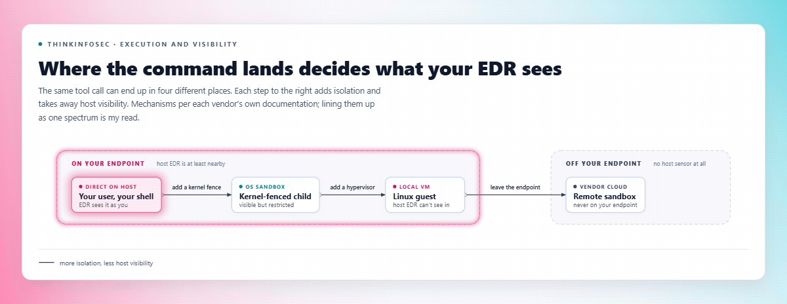
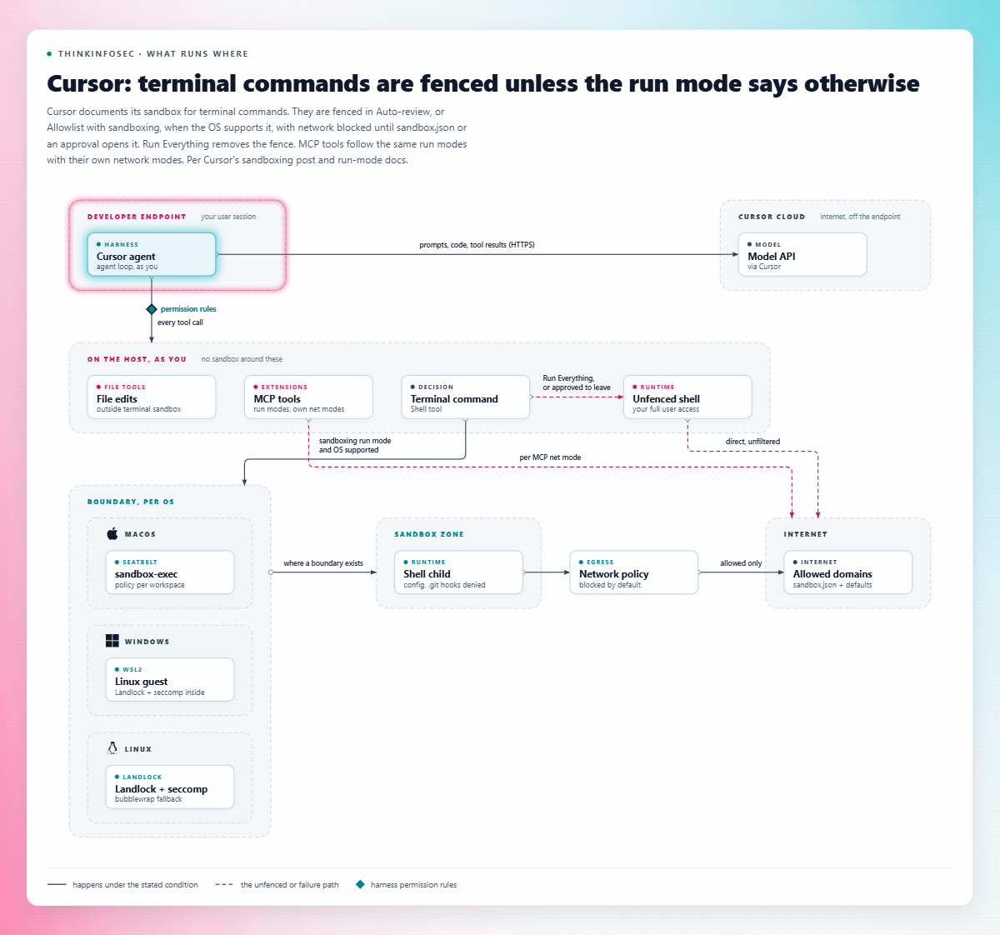
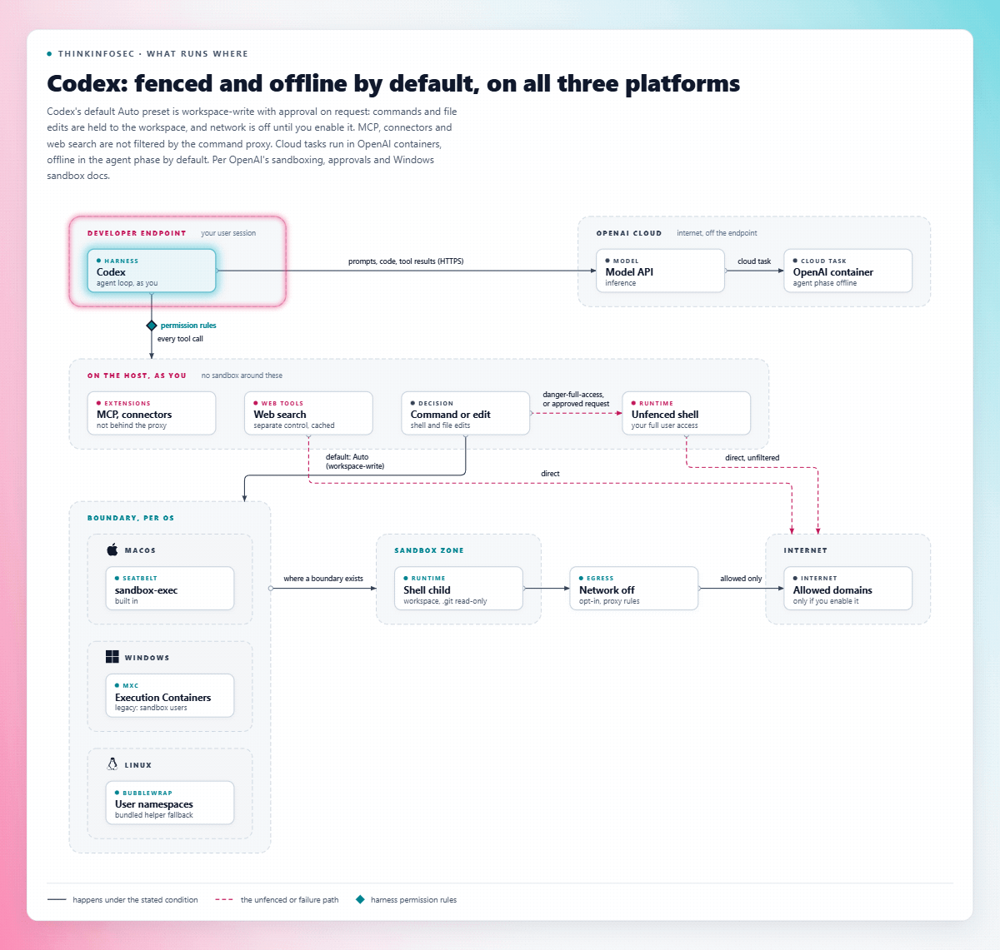
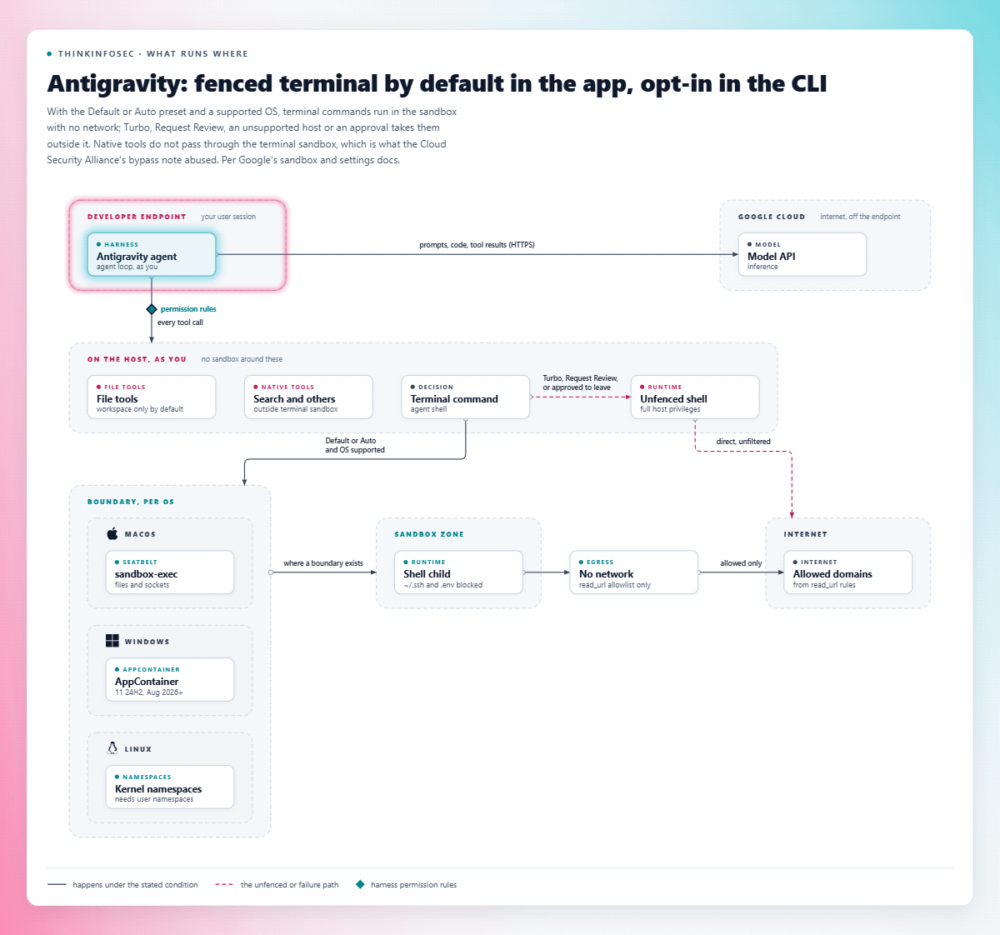

Your agent is not the model: harnesses, runtimes, and why your EDR is squinting
Research as of 13 November 2026. Vendor docs in this space change monthly, so treat every version number and default below as "true on the day I read it".
If you ask five people what an "AI agent" is, you get six answers and a vendor slide. That would be fine if agents were still a demo. They aren't. They are on developer laptops right now, running shell commands under real user accounts, and most security teams I talk to can't answer a simple question: when Claude, Cursor or Codex runs a command on that machine, where does it run, and who can see it?
So let's build this up properly, from the concept through to the bit that should bother you.
What an agent actually is
The cleanest definition I know of is still Anthropic's, from Building effective agents (December 2024). It separates two things that marketing tends to blend. Workflows are "systems where LLMs and tools are orchestrated through predefined code paths". Agents are "systems where LLMs dynamically direct their own processes and tool usage". And then the line that does all the work:
They are typically just LLMs using tools based on environmental feedback in a loop.
That's it. A loop. Worth pulling this apart into three pieces, because the whole security conversation depends on keeping them separate. The three-way split below is my framing, not Anthropic's, but it maps onto every product in this piece.
The model is a text predictor. It takes tokens in and produces tokens out. It has no hands. When it "runs a command", what it really does is emit a structured request that says, in effect, please call the shell tool with this string.
The harness is the program around the model. It assembles the context (system prompt, tool definitions, conversation history, file contents), sends it to the model, parses the tool call that comes back, decides whether that call is allowed, executes it, and feeds the result back in. Claude Code, Cursor's agent, Codex CLI and Antigravity are all harnesses. The harness is where permissions, memory, sub-agents and hooks live.
The runtime is where the tool call physically lands: your shell on your host, a kernel-level sandbox, a virtual machine (VM), or somebody else's cloud. This is the part that decides blast radius, and it's the part that varies wildly between products and between Windows and Mac.

The loop in the diagram is worth staring at for a second, because of what flows along the bottom edge. Every tool result goes back into the model's context. A web page the agent fetched, a README in a cloned repo, a Slack message pulled through a connector: all of it becomes input the model reasons over on the next turn. There's no separate channel for "data" versus "instructions". That is prompt injection in one sentence, and it's structural, not a bug somebody forgot to fix.
Ollama is not an agent (and that matters)
There's a common confusion that goes "we run local models through Ollama, so our agent is local and contained". Half of that sentence is about the model and the other half is about the runtime, and they have nothing to do with each other.
Ollama is a model provider. It loads weights, serves inference over an HTTP API on your machine, and that's where its job ends. Its own tool calling documentation shows this quite plainly if you read the example code: the model returns a tool call, and the client application runs the function and posts the result back. In the docs' words, "an agent loop allows the model to decide when to invoke tools and incorporate their results into its replies". Decide when. Not execute.
Which means you can swap the brain without changing the hands. Per Ollama's Claude Code integration page, "Ollama connects Claude Code to local and cloud models through its Anthropic-compatible API", and the manual setup is three environment variables:
ANTHROPIC_BASE_URL=http://localhost:11434
ANTHROPIC_AUTH_TOKEN=ollama
ANTHROPIC_API_KEY=""The harness thinks it's talking to Anthropic. It's talking to a model on your GPU. There's even a one-liner now, ollama launch claude, that wires it up for you. The same page recommends a context window of 64k or more for local models, which tells you how much of an agent's "intelligence" is really just the harness stuffing context in.
Here's the security read, and it's mine. Going local changes exactly one thing: where your prompts and code get sent for inference. That's a real data-sovereignty win. It changes nothing about what the harness is allowed to execute. The same Bash tool, the same file writes, the same Model Context Protocol (MCP) servers, the same permissions. And you've arguably made one thing worse, because a small local model is the one deciding which commands to run, and the big frontier labs spend a lot of effort training their models to resist injected instructions. I haven't seen a rigorous independent comparison of injection resistance between frontier and small open-weight models inside the same harness, so take that as a reasoned worry rather than a measured fact.
Long story short: Ollama versus a cloud API is a privacy decision. Sandbox versus no sandbox is a safety decision. Don't let one stand in for the other.
So where does the code run?
This is where the products genuinely differ, and where Windows and Mac part ways. The spectrum below is how I line them up.

Hold that picture, and let's go product by product, using each vendor's own documentation.
Claude Code runs on your host as you. Its sandboxing docs describe an optional OS-level sandbox: Seatbelt on macOS, bubblewrap on Linux and WSL2 (Windows Subsystem for Linux). Three sentences from that page deserve to be read slowly by anyone running a Windows fleet:
The sandbox runs on macOS, Linux, and WSL2. On native Windows, Claude Code runs commands unsandboxed.
And: "The sandbox is off by default." And on scope: "The sandbox covers shell commands only." The built-in file tools follow permission rules instead, and hooks, local MCP servers and a few other extension points, per the same page, "run with your full access". It also fails open by default: if the platform can't support the sandbox, commands run without it unless you set sandbox.failIfUnavailable. Even when it's on, the default policy allows reads of the whole machine, including ~/.ssh and ~/.aws/credentials, unless you deny them. Full credit to Anthropic for documenting all of this bluntly. But the honest summary for a Windows shop is that the control that exists is the permission prompt, not a kernel boundary. (The open-source sandbox-runtime repo reportedly carries an alpha Windows backend; I only have that second-hand, so I'm not counting it.)

Claude Cowork takes the opposite approach. Anthropic's desktop architecture overview says that for local sessions "the agent loop runs natively on the device", but "shell commands and any code Claude writes execute inside a dedicated Linux VM", isolated by "Apple Virtualization.framework on macOS, Hyper-V on Windows". So on both platforms the code runs in a Linux guest, not in your Windows or macOS userland. Note the split, though: file reads and writes in connected folders, web fetches and local plugin MCP servers still run natively, gated by an application-layer permission system rather than the hypervisor. The same article says Cowork sessions now run in the cloud by default, in a per-session sandbox on Anthropic's infrastructure, with local execution remaining for existing desktop deployments.

Cursor published a properly useful engineering write-up, Agent sandboxing (February 2026). On macOS it uses Seatbelt via sandbox-exec with a dynamically generated policy. On Linux it combines Landlock and seccomp directly. On Windows it runs that Linux sandbox inside WSL2, because, as the post puts it, native Windows primitives are mostly built for browsers, and "we're working with Microsoft to ensure the necessary primitives become available". They considered VMs and rejected them for startup latency and memory overhead. The motivation is the interesting part: per-command approval leads to "approval fatigue, which undermines the point of approvals in the first place". Cursor's own number is that sandboxed agents "stop 40% less often than unsandboxed ones". That's the company measuring its own product, so standard vendor discount applies, but the direction is believable to anyone who has clicked "allow" forty times before lunch.

Codex is the one that went native on Windows. OpenAI's sandboxing docs state that "the default permissions mode applies sandboxing automatically", with Seatbelt on macOS, bubblewrap on Linux, and on Windows "the native Windows sandbox when you run in PowerShell" (or the Linux implementation under WSL2). Three modes: read-only, workspace-write and the helpfully named danger-full-access. The default Auto preset pairs workspace-write with approval on request, and the approvals and security docs are blunt about the network: "By default, the agent runs with network access turned off." Two caveats sit in those same docs. The command proxy doesn't filter web search, connectors or MCP servers, and cloud tasks run in OpenAI's containers instead, with the agent phase offline by default.
The Windows story has moved, too. OpenAI's Windows sandbox docs now put Microsoft Execution Containers (MXC) first, on Windows 11 24H2 build 26100.9278 or 25H2 build 26200.9278 and later, and list two legacy fallbacks: elevated, which provisions dedicated sandbox users and firewall rules, and unelevated, which uses a restricted token and access control lists (ACLs). OpenAI's engineering post on how the original was built wouldn't load for me (a 403), so the background comes via Daniel Vaughan's write-up of it, and gets treated accordingly: sandbox users and firewall rules were needed because a restricted token on its own can't block network traffic. If that account is right, it's a neat illustration of the Windows problem. On a Mac you write a Seatbelt profile. On Windows, until the OS grew a container primitive, you ended up provisioning user accounts and firewall rules to get the same outcome.

Antigravity documents a terminal sandbox that uses sandbox-exec on macOS and kernel namespaces on Linux. On Windows, the CLI docs say "commands run in an AppContainer", and the requirement is specific: Windows 11 24H2 with the August 2026 update or later. Codex's MXC requirement lands on the same Windows 11 releases, so my read (and it is mine, no vendor says it) is that both are the "necessary primitives" Cursor was waiting on from Microsoft, finally showing up in the OS. The sandbox is on by default in the app and off by default in the CLI, and there's a Turbo preset that the settings docs describe as "run all commands without restrictions". Worth knowing as well: the Cloud Security Alliance published a research note describing a prompt injection that abused a native file-search tool, which fired before Strict Mode ever evaluated a command, and Google reportedly patched it in April. I've only read summaries of that one, but the lesson generalises: a sandbox around the shell does nothing for tools that never go through the shell.

Side by side, as documented today:
| macOS | Windows | Sandbox on by default? | |
|---|---|---|---|
| Claude Code | Seatbelt | None natively. bubblewrap under WSL2 | No |
| Claude Cowork (local) | Linux VM on Virtualization.framework | Linux VM on Hyper-V | Yes, for shell and code (cloud is now the default) |
| Cursor | Seatbelt | Linux sandbox inside WSL2 | Per Cursor's docs, yes where available |
| Codex | Seatbelt | Native: Microsoft Execution Containers; legacy sandbox users or restricted token | Yes |
| Antigravity | Seatbelt | AppContainer on recent Windows 11 builds | App yes, CLI no |
Notice the Mac column. Everybody landed on Seatbelt, a mechanism Apple deprecated in 2016 and which Cursor points out is still what Chrome uses. Notice the Windows column: five products, four different answers. That inconsistency is the Windows story.
Why your EDR can't see it
"No EDR visibility" is actually three different problems wearing one label, and they map straight onto that spectrum diagram.
On the host, the EDR sees everything and understands nothing. When the agent runs directly as your user, endpoint detection and response (EDR) tooling gets the full process tree. The trouble is attribution. Elastic Security Labs put it well in a piece on auditing Cursor with hooks (August 2026, Wieger van der Meulen): agent activity "happens under the developer's account inside processes the developer launched", so "this is indistinguishable from the developer doing the same things". The EDR sees powershell.exe spawned by a signed, trusted developer tool. It doesn't see the prompt, or the poisoned README that caused it.
And the telemetry really does look like an intrusion. Sophos X-Ops published When AI agents look like attackers in July, based on seven days of June telemetry from its Windows behavioural engine. By its own description it's "a first-pass, short signal dump", one vendor's fleet rather than a census, so read it as a signal. But the examples are vivid. Claude Code ran cmdkey.exe /list against Windows Credential Manager. A skill chain used PowerShell and the Data Protection API (DPAPI) to decrypt browser data. Codex tried to fetch a Python installer with certutil, got blocked, and pivoted to bitsadmin, which is exactly what a hands-on-keyboard attacker does. Cursor wrote a VBScript file into the Startup folder. Credential access made up 56.2% of the blocking detections. Sophos's position is the right one, I think: the rules were correct to fire, and an agent doing something risky does not make it safe. The temptation to allowlist claude.exe and cursor.exe to quiet the queue is exactly how you build the blind spot yourself.
In a local VM, the EDR is blind by design. This one isn't an inference, Anthropic says it outright in the Cowork architecture article:
The VM is isolated from host-based security tools by design, so an EDR sensor on the host can't see inside it.
Your Windows sensor sees a Hyper-V worker process using CPU. What runs inside the Linux guest is opaque. Anthropic's answer is that admins can run an approved vendor's sensor inside the VM, which the article says is in beta on macOS and Windows. Good that it exists. It's also a second sensor deployment, on a different OS, for a guest your endpoint team didn't build.
In the cloud, there is no endpoint. Same article: "Sessions in the cloud run entirely outside your endpoints, so EDR tools can't observe them", followed by a sentence I wish more vendor docs had the nerve to write: "If your compliance posture depends on endpoint visibility, account for this before rolling out Cowork."
There's a fourth gap that sits across all three. A lot of what an agent does never spawns a process at all. A file edit is the harness's own process writing to disk. A web fetch or an MCP call is an HTTPS request from inside a trusted binary. The reasoning that led to the action lives in a TLS session to a model API. Process telemetry was built to catch programs, and the interesting part of an agent is the conversation.
The complexity, honestly
Here's where I land on why this is hard, and none of it is solved by picking the "right" product.
Isolation and visibility trade against each other. The safest place to run untrusted code (a VM, or someone else's cloud) is the place your endpoint stack can't look. The most observable place (the bare host) is the one where a mistake costs the most. Every vendor in the table has picked a different point on that line, sometimes a different point per OS.
The sandbox usually covers the shell and not much else. Claude Code's docs are explicit that hooks and local MCP servers run with full access. CurXecute (CVE-2025-54135) is the textbook case: a message arriving through a Slack MCP server persuaded Cursor's agent to rewrite its own MCP configuration, which then launched attacker-chosen commands. No shell sandbox sits in that path. It was fixed in the 1.3 line, and the pattern has resurfaced in other products since.
Defaults do the real work, and they are all over the place. Sandbox off by default here, on by default there, fail-open in one, unavailable on older Windows builds in another. And every product ships a "just let it run" switch, whether it's called --dangerously-skip-permissions, danger-full-access or Turbo. The Sophos credential-dumping example involved exactly that flag.
And the Windows gap is real. On macOS there's one mature primitive that everyone uses. On Windows, depending on the tool, you get nothing, a Linux sandbox inside WSL2 (itself a VM your EDR has limited sight into), a bespoke token-and-ACL construction, or an AppContainer that needs a very recent build. If your fleet is Windows 11 Enterprise, as mine is, you cannot assume the Mac-centric blog post you read about agent sandboxing describes your machines.
All of this to say: treat the agent as a non-human identity operating on a human's credentials, and build controls accordingly. If I were doing this on Monday:
- Inventory the harnesses, then the modes. Knowing Cursor is installed is step one. Knowing which machines run it with the sandbox off is the useful bit.
- Pin the defaults centrally. Each of these tools has managed settings. Turn the sandbox on where it exists, set fail-closed where it's offered, and disable the bypass flags.
- Take the harness's own telemetry. Hooks, OpenTelemetry export and compliance APIs are the only place intent is recorded. Elastic's caveat applies: hooks are "tamper-evident" rather than tamper-proof, and they don't cover a personal login.
- Don't allowlist the binary. Scope tuning by parent process and workspace path, and keep credential-access and persistence rules firing no matter who the parent is.
- Decide your position on VMs and cloud sessions on purpose. Either get a sensor into the guest, or accept the gap in writing with compensating controls at the identity and network layers.
- Keep secrets out of reach. An agent that can read
~/.aws/credentialscan be talked into sending it somewhere. Short-lived credentials and deny-read rules cost little.
A couple of honest limits on this research. I couldn't load OpenAI's own Windows sandbox engineering post or The Hacker News coverage of the Antigravity fix, so those two points rest on secondary accounts and are flagged as such above. And I've described what the documentation says, not what I've tested on a bench. Verifying each sandbox with a canary file and a blocked outbound connection, on both Windows and Mac, is the obvious follow-up piece.
Learn more about my Cloud and Security Projects: [Links to platforms]
Thank you for reading and leave your thoughts/comments!